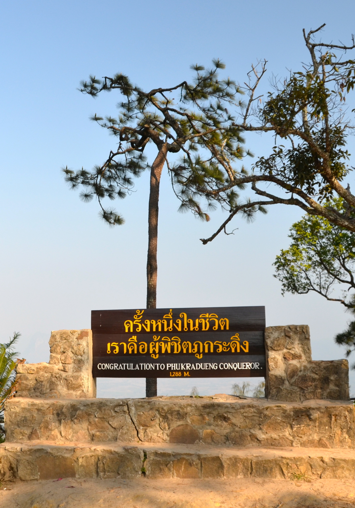

ภูกระดึง เป็นอุทยานแห่งชาติ ลำดับที่ 2 ของประเทศไทย ตั้งอยู่ในท้องที่ตำบลศรีฐาน อำเภอภูกระดึง จังหวัดเลย เป็นภูเขาหินทรายยอดตัด เป็นที่ราบขนาดใหญ่ จุดสูงสุดอยู่ที่บริเวณคอกเมย มีความสูง 1,316 เมตรจากระดับน้ำทะเล เป็นหนึ่งในแหล่งท่องเที่ยวที่มีชื่อเสียงมากที่สุดของประเทศไทย ภูกระดึงประกอบไปด้วยพรรณไม้นานาชนิด พันธุ์สัตว์ป่านานาพันธุ์ หน้าผา ทุ่งหญ้า ลำธาร และน้ำตก ด้วยความสูง บรรยากาศ และสภาพอากาศที่เย็นสบายตลอดปีบนยอดภูกระดึง โดยเฉพาะในช่วงฤดูหนาวอุณหภูมิอาจลดต่ำจนถึง 0 องศาเซลเซียส จึงเป็นแรงจูงใจให้นักท่องเที่ยวที่หวังจะเป็นผู้พิชิตยอดภูกระดึงสักครั้งหนึ่งในชีวิต
สำหรับการเดินทางขึ้นภูกระดึงนั้น ทางอุทยานฯ จะอนุญาตให้นักท่องเที่ยวเดินขึ้นได้ตั้งแต่เวลา 07.00 - 14.00 น. ของทุกวัน และหลังจากเวลา 14.00 น. เป็นต้นไป ทางอุทยานฯ จะไม่อนุญาต เพราะระยะทางในการเดินทางขึ้นเขาต้องใช้เวลาในการเดินเท้า ประมาณ 4-5 ชั่วโมง ซึ่งจะตรงกับเวลาพลบค่ำในระหว่างทาง ดังนั้น อาจจะทำให้เกิดความยากลำบาก อีกทั้งอาจได้รับอันตรายจากสัตว์ป่าที่ออกหากินในเวลากลางคืนอีกด้วย
อัตราค่าบริการเข้าอุทยานแห่งชาติชาวไทย : ผู้ใหญ่ 40 บาท เด็ก 20 บาท
ชาวต่างชาติ : ผู้ใหญ่ 400 บาท เด็ก 200 บาท
พฤศจิกายน-กุมภาพันธ์